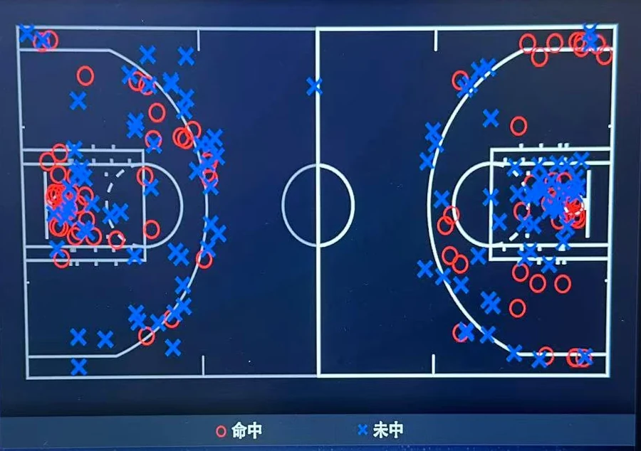

BO7 / 第 1 场 / 全场战报
湖人客场赢下首战
红方 · 主场
火箭jesse
蓝方 · 客场
湖人Buerchener
系列赛 Buerchener 1–0 领先
东契奇拿下 44 分、15 篮板、9 助攻，凯斯勒抢下 21 个篮板。杜兰特为火箭攻下全场最高的 57 分，另有 8 篮板、1 助攻。
球员数据
投篮和三分均为命中数／出手数。杜兰特和东契奇的三分出手数用球队总出手减去其余球员的出手数核对。手机上可横向滑动表格。
球队对比
| 项目 | 火箭 | 湖人 |
|---|
投篮分布


投篮图显示火箭 47 篮板、湖人 61 篮板。球队对比页的进攻与防守篮板相加分别为 49 和 62，两处均保留游戏页面的原值。


AI 解说席
杜兰特砍了 57 分，火箭最多还领先 18 分。湖人怎么把这场抢回来的？
看快攻。Buerchener 的湖人靠快攻拿了 49 分，jesse 的火箭拿了 26 分。光这一项就差了 23 分，比终场的 10 分分差还大。东契奇离三双只差一次助攻，凯斯勒一个人抢了 21 个篮板。对火箭来说，球一出手，防守就得开始了。
第二场给 jesse 的建议
杜兰特和阿门·汤普森合拿 89 分，其余队友一共 10 分。可以让阿门为杜兰特掩护后顺下，两人多一个配合选择。出手时留一名后卫先退，优先堵湖人的快攻。
第二场给 Buerchener 的建议
让东契奇在凯斯勒拿下后场篮板时接第一传。火箭回防慢就推快攻，退得快就找另一侧的里夫斯。他这场拿了 23 分，值得再给他几个回合。